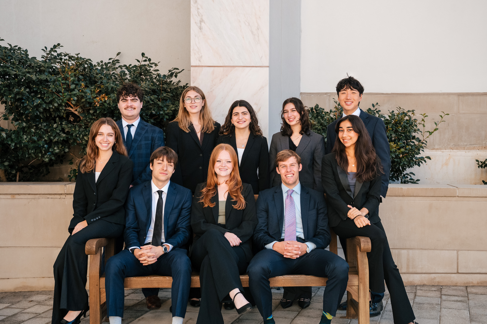

About SBG
A student-run consulting organization at Emory focused on sustainability.
Our Mission Statement
Sustainable Business Group (SBG) is Emory’s premier sustainability-oriented consulting organization, driven by a strong sense of purpose and a shared commitment to using business as a force for environmental progress. We bring together focused, mission-driven students passionate about the intersection of business and sustainability. We empower all Atlanta and Oxford undergraduates with the knowledge, connections, and experiences necessary to thrive in this evolving field.
SBG provides pro-bono consulting services to both sustainability-focused companies as well as organizations seeking to integrate sustainable practices into their operations. These efforts are complemented by hosting guest speakers, career development workshops, and networking events, offering students a platform to gain industry insights and build meaningful professional connections that will serve them at Emory and well beyond.

Two branches: consulting and education.
Consulting
Student teams do pro-bono ESG consulting for companies ranging from startups to the Fortune 500. Most of our teams work directly with businesses in the Atlanta area. You can apply to be consultants or Project Leads.
Consultant Fellow Initiative
A program for any student who wants to learn how consulting works. Fellows learn the basics before joining a client team.
Speaker Series
Talks from people working in sustainability, ESG and consulting, so members can hear first-hand what careers in the field look like.
One semester, start to finish.
Each team is run by a Project Lead and supported by a professional on the board of directors, members of the executive board, and their client contact.
Scope
We meet with the client to agree on the question, goals and final deliverable.
Research
The team gathers the necessary background data and information to inform their deliverables.
Build
We draft our deliverables, whether it is a model, presentation, or other materials, and check in with the client along the way.
Present
The team presents its final deliverable/recommendations to the client directly.